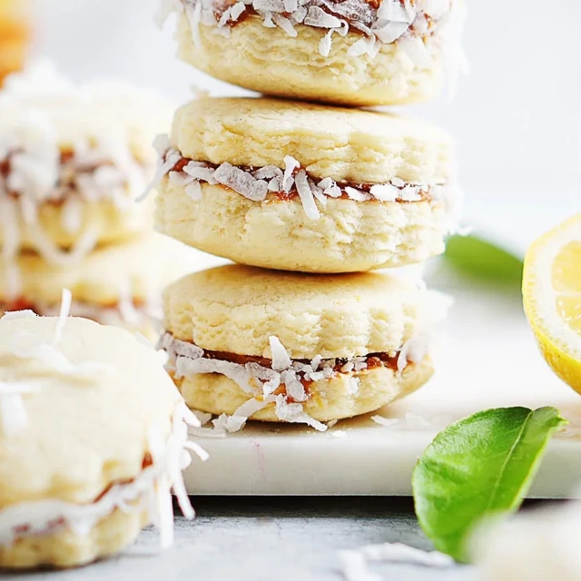

Alfajores

Alfajores are light, buttery cookies with a subtle lemon flavor, and are filled with a sweet and creamy dulce de leche, giving you a mouthful of delicious goodness!
They are wonderful served alongside a nice cup of tea or coffee, as a nice mid afternoon treat! They are also a great addition to any picnic hamper, and they make wonderful, simple homemade gifts.
Ingredients
- 1 cup all-purpose flour
- 1 cup cornstarch
- 1 teaspoon baking powder
- 1/4 teaspoon baking soda
- 1/4 teaspoon kosher salt
- 1/2 cup granulated sugar
- 8 tablespoons unsalted butter
- 2 large egg yolks
- 2 teaspoons finely grated lemon zest
- 1 teaspoon vanilla extract
- 2 tablespoons warm water
- 1 cup coconut flakes
- 8 ounces Dulce de Leche
Instructions
- In a large bowl, sift together the flour, cornstarch, baking powder, baking soda and kosher salt. Set aside
- In the bowl of an electric mixer, beat sugar and butter until light and fluffy, about 3 minutes.
- Add yolks and beat to combine.
- Add the vanilla extract, water and lemon zest beat until just combined.
- Add flour mixture, and mix on low speed until the dough just comes together.
- Wrap the dough in plastic and chill until firm, at least 2 hours.
- Heat oven 350 degrees. Line baking sheets with parchment paper.
- Remove dough from plastic wrap and place on a lightly floured surface, flour a rolling pin and roll out to about ¼ inch thick. Cut the dough with a 2 inch cookie cutter.
- Place cookies on prepared sheet pans about about 1 inch apart.
- Bake for about 9 minutes or until firm and edges are pale golden and the middle of the cookie is firm.
- Transfer baking pan to a rack and allow to cool completely before removing from baking sheet.
- Spread 1 tablespoon of dulce de leche onto the back of half the cookies. Place a second cookie on top and gently press to create a sandwich and repeat.
- Roll sides in coconut and dust generously with powdered sugar before serving.